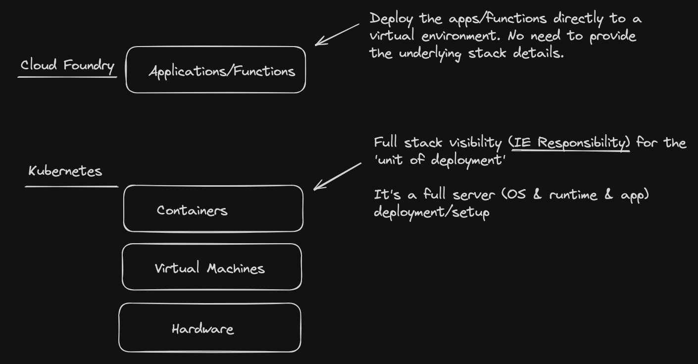
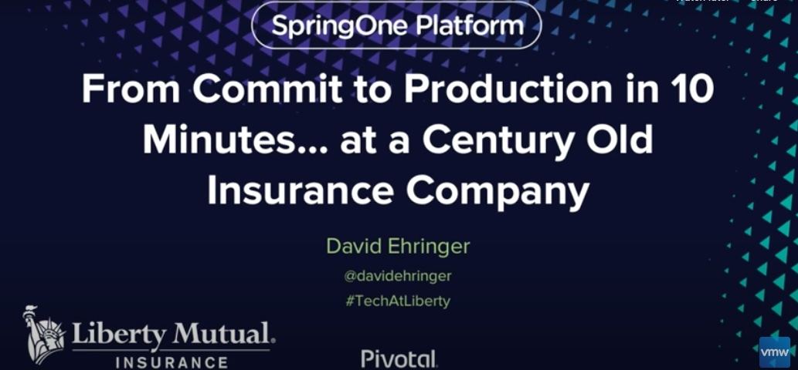
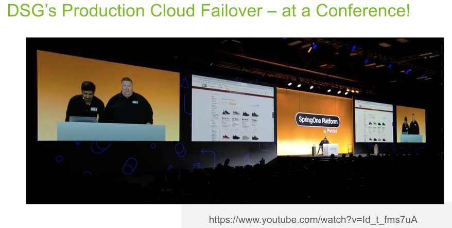

Question: What does it cost to change one line of code running in your enterprise today?
↓ Why change ↓
Reasons to "change one line of code"
New feature
Bug fix
Runtime security update (e.g. jvm patch)
Runtime version upgrade (support, speed...)
OS security update
OS version upgrade (support, speed...)
Question: How often do you aspirationally want to "change one line of code"?
↓ Factors to consider↓
Determining 'rate of change' for running application realestate
Reasons to go faster
- Deliver new business value
- Improve security posture
Reasons to moderate change velocity
- Risk of change - Insufficient testing
- Cost of change - Insufficient automation
- Impact of change - Downtime requirement
Question: What are "Modern Applications"
↓ & why we creating this new generational category? ↓
"Modern Applications" are engineered to be easier to develop, test, deploy and update without introducing additional risk to existing systems
"Modern Application" aliases
Cloud Native application
Micro service based application
Serverless application
Digital application
A "modern application" is typically a distributed system, engineered to run on an infrastructure abstraction that facilitates simplifed lifecyle management
So automate.. automate.. automate..!
So if 'automation' is critical, what's the catch?
How much does building and maintaining the automations themselves cost?
This is why we need the right ABSTRACTIONS
Abstractions = hidden, reused automations that make the resource much easier to use
The Power of Abstractions
An abstraction is a 'hidden, reused automation' that simplifies the underlying resource
↓ History Lesson Time: Abstraction vs Virtualization ↓
A 'virtual' something should look exactly like the 'something'..
A 'virtual machine' looks just like a real server
A 'container' looks just like a virtual-machine / real-server
This means we have a 'full stack' to manage in VMs and Containers.. just like VMs
BUT Platform / Serverless is a much higher-level abstraction
The platform just runs the code/application directly
Opinionated abstraction vs potentially 1000s of lines of configuration
Cloud Foundry vs Kubernetes aka PaaS vs CaaS
Wasn't CF just a K8S precursor?
K8S should easily replace all CF right?
NO!
K8S is more of a successor to BOSH than CF!
So what does TAS do differently to support 'modern applications' better than any other substrate?

CF is Serverless! - no container/vm/server req'd
CF has self-service
CF has multi-tenancy
CF has a built-in marketplace with secrets mgmt
What was the impact of the CF 'abstraction'?
Unprecedented acceleration of value delivery
Applications in production in 5 weeks vs 12 months
Unprecedented operational stability
Multicloud resiliency
Application security posture improvements with frequent patching
→
CF Patch Frequency "in the wild"
Tanzu Application Service Enterprise Customers are changing a line of code with unprecedented / unrivaled velocity to this day
Examples
Financial Services firm in the US
- Over 100,000 'changes' per month!
Insurance firm in the US
- Over 70,000 'changes' per month!
but how?
because the 'platform' owns huge portions of the stack within an abstraction